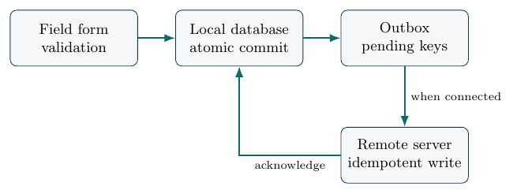

Building for the Machine and Infrastructure People Actually Have
A correct algorithm is not yet a usable application. This chapter develops a small offline-first system that tolerates power loss, interrupted connections, duplicate submissions and limited storage. We treat transactions, synchronisation, security, recovery and maintainability as part of scientific reliability, not as details to be postponed after a model has been built.
When a connection is a luxury rather than an assumption
Imagine a field worker recording a water-quality measurement at a rural treatment point. The worker has a low-cost device, enough battery for an hour, and uncertain network coverage. A programme designed for uninterrupted cloud access may lose the record when the connection fails after the worker presses Submit. A programme that saves locally first can continue collecting data, then synchronise later. But this introduces other questions: what if the same record is uploaded twice, the phone is lost, two workers edit the same visit or the electricity fails in the middle of writing a file?
These are engineering questions with precise answers. The goal is not to replicate the infrastructure of a large technology company. It is to determine which failures can reasonably occur and establish what the software will do when they occur. Foundational treatments of reliable data systems and transactions include Kleppmann (2017; Gray and Reuter 1992). Their lesson is especially relevant here: a system’s promises should be expressed as properties that can be tested, not as reassuring adjectives.
Specify an operational contract before drawing screens
For each data record, specify required fields, allowed ranges, units,
a local identifier and the meaning of a saved state. An illustrative
water-quality record might contain record_id,
site_id, sampled_at, measurement,
unit, device_id and revision. If
a measurement is outside a plausible instrument range, the application
should flag it for review rather than secretly replace it with a typical
value. If the timestamp comes from a device whose clock may be wrong,
that risk belongs in metadata. No choice of programming framework fixes
a defective measurement process.
A small system can use states such as draft,
validated, queued, acknowledged
and conflict. A record moves through those states under
stated conditions. For example, a valid local record should be committed
to persistent storage before the interface tells the worker it has been
saved. A successful network request is not enough to claim remote
persistence until the server confirms a durable result. If
acknowledgement is lost after the server commits, retrying the same
operation should not create a second observation.
SQLite transactions and the meaning of atomicity
A database transaction groups changes that must be treated as one logical operation. Suppose a new measurement is inserted and a synchronisation queue entry is created. If the application inserts the measurement but crashes before creating the queue entry, the observation may never be uploaded. If both changes occur in one transaction, the system can ensure that either both are committed or neither is committed, subject to the database’s documented guarantees and correct configuration.
The essential logical operation is
$$
{,;} .
$$
This protects a local invariant: every committed record that requires synchronisation has a corresponding pending outbox event. Transaction properties do not protect against a damaged storage device, loss of encryption keys or an application that never performs a backup. Reliable systems need more than a correct database primitive.
Proposition. Assume a transaction contains exactly one insertion into a measurement table and one insertion into an outbox table, and that neither insertion occurs elsewhere without appropriate controls. If the database guarantees atomic commit, a crash cannot leave a committed measurement from that transaction without its committed outbox event.
Proof. Atomicity permits only two persistent outcomes: all transaction effects are committed, or none are. A state with only one of the two insertions is excluded. The claim relies on the stated transactional assumptions and does not address later manual modification or database corruption. ◻
The proof establishes a software property under assumptions, not that all real-world data will be delivered. The worker may have misidentified the sampling site or the device may be stolen before the local backup is made.
Delivery at least once, effect at most once
Network requests can fail in an ambiguous way. Imagine the server receives and stores a record, but the reply never reaches the client. The client cannot know whether the upload succeeded. If it retries, the server may receive the same logical operation twice. We therefore design a unique idempotency key, typically the stable record identifier and revision, so that repeated delivery has the same stored effect as one delivery.
Let denote the server-side application of a message with key . An idempotent write should satisfy
$$
T_k(T_k(S))=T_k(S)
$$
for all valid server states . This is a statement about the effect, not a guarantee that the message arrived exactly once. A retry policy with exponential backoff improves behaviour under temporary outages but should have a limit and should not silently abandon pending data. The system needs an accessible queue status and an escalation path when a record remains unsynchronised.
Example. A field worker submits a water measurement of 35 units. The server saves it, but the connection drops before acknowledgement. A naive retry inserts a second row with the same value and location. The analyst later sees two measurements and may infer that the site was sampled twice. With a stable operation key enforced by a unique database constraint, the second submission returns the existing result instead of creating a new observation. The original physical measurement still needs quality checks; idempotency only prevents duplication of a logical record.
Conflicts are decisions, not exceptions to hide
If two devices update the same record while offline, the server may receive incompatible revisions. A “last write wins” rule is simple but can discard a valid correction without informing anyone. For certain noncritical fields it may be acceptable, but for a measurement record or approval it may be indefensible. A safer approach is to store the conflicting versions and require an authorised reviewer to resolve them, with a complete audit trail.
Use revision numbers or version vectors appropriate to the system. A simple optimistic concurrency rule accepts an edit only if its declared base revision equals the current revision. Otherwise the server reports conflict and preserves both pieces of information. This prevents accidental overwriting; it does not establish which record is scientifically correct. When people collect actual observations, a conflict-management screen is part of data quality.
Power loss, partial writes and recovery
We should distinguish a process crash from loss of electricity, sudden device restart, disk failure and intentional deletion. Each has different effects. A process crash during a database transaction is often recoverable by the database’s journal or write-ahead log. A damaged storage medium may require restoration from a backup. An application-level bug can commit the wrong values perfectly; transaction mechanisms do not fix its logic.
Design tests that kill the process between operations. Verify that a committed record survives restart, a partially written transaction is rolled back, and retrying an acknowledged upload does not duplicate it. Then disconnect the network while a series of records are being entered, reconnect it, and inspect the remote counts. A successful demonstration consists of an input log, observed outputs, checks of invariants and clearly stated software versions. It is not merely a video showing that a screen continues to respond.
Measuring the actual cost of reliability
Resource-constrained deployment requires measurements, not assumptions that a small codebase uses little energy. Important quantities include storage per record, memory footprint, time to open and save a form, synchronisation bytes per record, time to catch up after an outage, and battery use where a defensible measurement process exists. Measure representative workloads repeatedly. Distinguish startup costs from steady-state behaviour, and avoid comparing two applications run under different device conditions.
Suppose an offline application stores records of average payload size bytes, plus metadata and index overhead . Its storage requirement is approximately . This elementary formula is useful for capacity planning, but real overhead depends on database pages, indexes, compression and old versions. If the application accumulates records faster than they can be synchronised, its queue may grow without bound. Let incoming records average per day and successful uploads average per connected day. A necessary long-run stability condition is that effective service capacity exceeds arrival volume under the actual connectivity schedule; simply choosing on a fully connected day is insufficient.
A bounded resource policy
A deployment should specify what happens as storage approaches its limit. Never silently delete unacknowledged field measurements to keep the interface responsive. The system may warn the worker, disable nonessential media capture, compress approved attachments or arrange safe manual export. A hard stop on new records can also have consequences; users must understand the trade-off. Design the policy with the institution that carries the operational responsibility, not solely with the software developer.
A device-local cache is not a backup. A backup should be restorable, access-controlled and periodically tested. Where sensitive records exist, protect them in transit and at rest according to the actual threat model, rather than assuming that adding a password to the interface makes a stolen device safe. Established security principles include least privilege and minimisation of exposed information (Saltzer and Schroeder 1975; Standards and Technology 2020).
A threat model for a modest field system
Start by listing what is worth protecting: participant identities, facility records, credentials, location history and the integrity of measurements. Then identify plausible threats: a lost phone, an unauthorised person using an unlocked workstation, a malicious attachment, a compromised synchronisation endpoint or an accidental spreadsheet export to a public folder. For each threat, state its consequence and a practical mitigation.
| Failure mode | Design response and verification |
|---|---|
| Network unavailable | Local commit before remote send; test queued entries after restart. |
| Acknowledgement lost | Stable idempotency key; retransmit and confirm one server record. |
| Device clock inaccurate | Preserve device and received timestamps; flag large disagreements. |
| Duplicate record | Unique key with explicit merge or rejection rule. |
| Two offline edits conflict | Revision check; retain history and request resolution. |
| Storage nearly full | User-visible warning and supported safe-export plan. |
| Device lost | Authentication, access control, appropriate encryption and revocation. |
| Power interrupted | Crash tests and documented restore procedure. |
No control is effective without testing it. For instance, storing data in encrypted form but leaving a permanently logged-in device unattended may offer little protection against ordinary unauthorised access. Conversely, an elaborate security architecture that prevents a nurse from completing routine tasks may be bypassed. Security and usability are part of the same operational design problem.
Architecture of a minimal offline-first application
A deliberately small application has four components: a form that validates data, a local transactional store, an outbox of pending operations and a synchronisation worker that sends records when possible. The server applies idempotent writes and returns a stable acknowledgement. The user interface never invents a server status; it distinguishes “saved on this device” from “received by the server.”

Complete implementation exercise
The companion code/ch07_offline_store.py implements a
local SQLite measurement table and outbox, inserts both within a
transaction, and simulates remote idempotent delivery using a second
SQLite database. The first run creates several invented records,
including a retry of an already delivered identifier. Assertions check
that the local measurement and outbox counts agree at creation and that
retries do not increase the remote unique-record count. It is a teaching
core, not a production-ready application: it does not implement user
authentication, encryption, key management, real network transport or an
approved privacy policy.
Students should modify the programme to simulate a crash after beginning but before committing a transaction, test what survives, and document the result. Then add an intentionally incorrect implementation that inserts into two tables using separate commits. Demonstrate that a crash between commits can violate the intended invariant. Finally, introduce two conflicting revisions and design a safe path for human review. This is a more convincing exercise than merely writing an offline user interface.
Maintenance is a design outcome
A student-led system often ceases to work when its original author leaves. Reproducible setup instructions, tested dependencies, audit logs, data export formats and named institutional responsibilities should therefore be considered part of the output. A programme requiring frequent remote software changes may be unsuitable where staff cannot install updates and cannot verify compatibility with older devices.
An operational handover records who can create and revoke accounts, who owns data, who authorises software changes, how incidents are reported, and who pays for connectivity, backup and replacement equipment. It should state the minimum hardware on which the application has actually been tested. Claiming “works on low-cost devices” without reporting the devices and measurements is not an engineering result.
An offline application as a small distributed system
Even a two-device deployment becomes a distributed system once both devices exchange changes with a server. The devices can have different information at the same moment. One may know that a record has been locally saved while another knows only the last acknowledged version. This is not automatically an error; it is the unavoidable consequence of intermittent communication. The application must therefore describe what users are allowed to infer from a displayed state.
A local record marked “saved” should mean the transaction has committed on that device. A record marked “sent” may mean only that a network request was attempted. A record marked “received” should require the server’s acknowledgement. A record marked “verified” should mean something more: that an authorised check of its scientific or operational content has occurred. Conflating these four meanings creates misleading dashboards and can have consequences for downstream decisions.
The names of these states are not matters of visual design alone. A
state transition diagram can be translated into unit tests. For
instance, a transition from queued to
acknowledged should be impossible without a valid server
response. A retry should preserve the same idempotency key. Editing an
acknowledged record should create a new revision rather than silently
changing the data that a previous report already used.
Versioned changes and the problem of concurrent edits
Suppose two workers begin from revision 4 of the same observation. Worker A changes a measurement unit while Worker B corrects the location identifier. Both changes may be valid, but applying them in the wrong order can overwrite information. An optimistic concurrency mechanism requires each update to declare its base revision. The server accepts an update only if it matches the current revision; otherwise it reports a conflict. A human or explicitly tested merge procedure can then decide whether the changes are compatible.
A useful audit table records record_id,
revision, changed_at,
author_role, and separate fields for earlier and updated
values, along with a reason where necessary. It should not store secret
authentication information in plain text. An audit trail is useful
because the correct data value can depend on why a field was changed,
whether a replacement sample was taken and who authorised the
correction.
Reproducibility when packages and networks are unavailable
A development laptop may have current packages and reliable internet access, while a deployed device cannot download updates. Record dependency versions and build a reproducible installation path that works without fetching remote components at the point of use. Establish whether a security update can be delivered through a controlled offline mechanism. A deployment plan that requires downloading a new environment every morning is not an offline-first plan.
Software results should contain a version identifier and a timestamp. If a numerical decision rule is updated, previously produced reports may need to indicate which version generated them. Otherwise an auditor may attempt to reproduce a past calculation with a newer implementation and obtain a different result without understanding why. This is the software counterpart of recording data releases and survey documentation.
For a reliable scientific application, inputs and settings matter as much as executable code. An analysis should save the dataset version, model parameters, configuration file and checksums where appropriate. If a random procedure is involved, record the seed and algorithm version. A seed alone cannot guarantee identical output across incompatible libraries or hardware. Reproducibility is a property of the complete execution environment, not a single command (Sandve et al. 2013).
Designing failure experiments as engineering evidence
A useful failure experiment has a hypothesis and a measurable criterion. For example: “If power is interrupted before transaction commit, neither the measurement nor the corresponding outbox row remains visible after restart.” The test then deliberately terminates the process at a controlled point, reopens the database and queries both tables. A second hypothesis may concern a connection dropped after the server stores a record but before the client receives acknowledgement. The test retransmits and asserts that the server contains one logical measurement.
Results should report the number of attempts, software and database versions, operating system and where the interruption was introduced. A laboratory that never actually interrupts a write cannot support a claim about crash recovery. Likewise, a network-disconnection test performed only by adding a long delay is not equivalent to physically dropping the connection during a request. Start with small deterministic faults for which expected behaviour is clear; add more realistic fault injection only after the basic invariants pass.
A bounded deployment readiness exercise
Choose a representative low-cost machine and attempt the complete workflow: install without privileged internet access, create 200 records offline, restart after a simulated crash, synchronise after reconnection, inspect data integrity and recover from an exported backup. Measure how long each step takes, how much local storage is used and what help users need. If a requirement is not met, record it as a failure and revise the design. A failed test is evidence that improves the engineering process when its cause and conditions are documented.
The final question is organisational. Who will answer the phone when staff cannot synchronise a week’s records? Who may reset credentials? Who decides which device is authoritative? Can the system be repaired without its original student developer? These questions are neither an afterthought nor a reason to abandon mathematical work. They are the point at which a mathematical solution becomes a dependable service.
Extended implementation study: from a record to an auditable database
A reader should be able to build one small, dependable component rather than only admire an architecture diagram. We therefore develop a practical protocol for a field-data application. The example stores invented water-quality readings in SQLite. It is small enough to inspect completely, yet it encounters the same logical difficulties as a larger system: validation, atomicity, duplicate handling, synchronisation state and recovery. The implementation is deliberately not a finished mobile application.
Write an input specification
The first table is a measurement record. Assign a stable identifier when a new observation is created, not each time it is uploaded. Require a site identifier, timestamp, measurement value, unit and observer or device context as permitted by the application. Reject records with missing required fields. Distinguish a missing reading from zero concentration. A zero may be an observed value; an absent reading should not be converted to zero simply to avoid a database null.
The identifier should not be based solely on device time, because clocks can be inaccurate and two readings can occur at the same instant. A randomly generated identifier or a well-designed device-specific sequence can serve the purpose, but its collision risks and data-handling implications should be understood. For public teaching examples, use arbitrary non-identifying record keys. Real deployments should not encode patient identity or confidential location information directly into identifiers that will be transmitted widely.
Keep the database schema small and enforceable
The local database needs a measurements table keyed by record identifier and an outbox table keyed by the same identifier. The outbox indicates which logical records require a remote operation. A unique constraint enforces the property that two uploads with the same logical key do not create two measurement records. Additional checks can restrict nonnegative values, valid units and allowed status transitions. For a small system, the ability to state and test these invariants is more valuable than adopting an elaborate database framework.
One insertion routine should validate all fields, start a transaction, insert the record, create the pending outbox operation and commit. The interface then reports that the record is locally saved. It should not report that the central database has received the observation. A separate synchronisation routine selects pending operations, sends them, and marks each acknowledged only when a server response establishes durable acceptance.
Simulate the lost acknowledgement
Run the server-side receiver twice with the same operation key. In the correct implementation, the first call creates a row and the second returns the already stored logical result. The count of distinct remote records remains one. Next deliberately remove the uniqueness constraint in a temporary test database and run the same operation. The duplicate appears. The comparison shows that idempotency is an enforceable property rather than a label in the design document.
One subtlety matters: “ignore duplicate insert” is not a safe universal rule. If two submissions use the same key but different payloads, silently ignoring the second may conceal an inconsistency. A production design should detect payload mismatch and report conflict. The teaching programme demonstrates the narrow case of identical retries; extending it to conflict handling is a necessary next step before real deployment.
Restore after interruption
Create three records, confirm the local database count, terminate the programme and reopen the database file. The records should remain. Then arrange a controlled failure inside a transaction before commit and verify that neither partially inserted table change appears. Finally, export a backup, restore it into a new file and rerun a set of consistency checks. A backup that has never been restored is only a claim that recovery may be possible.
The result table should include the test name, triggering condition, expected invariant, observed state and verdict. For example, the duplicate-upload test expects one remote record after two attempts; the atomicity test expects either two related rows or none; the restart test expects committed rows to persist. These are deterministic tests and can support strong claims about the tested software configuration. They do not support claims about every possible hardware failure.
A complete failure matrix for a small field pilot
Several failures deserve separate experiments. Network refusal before upload tests queuing; network loss after server commit tests ambiguous acknowledgement; process termination during a local transaction tests atomicity; a full disk tests graceful storage failure; a wrong device clock tests timestamp warnings; simultaneous edits test conflict resolution; incorrect credentials test access control. The designer should decide which failures are safety critical and which are merely inconvenient.
Under each condition, document both the technical state and the user’s experience. A technically correct system that shows a spinning icon for ten minutes without explanation may lead the user to repeat an operation or abandon it. A technically correct rejection with an incomprehensible error message may also be unusable. Good systems reveal relevant state in ordinary language: “Saved on this device; upload pending” is more useful than a generic green success symbol.
Unreliable connectivity changes workflow design
Suppose synchronisation succeeds for only fifteen minutes each evening. The application must retain a local queue throughout the day. If the queue receives 100 small records per day but each successful connection can upload 300, the backlog may clear regularly. If uploads are slow because records contain large photographs, the queue could grow despite the same record count. Measure bytes and retry overhead, not merely the number of requests.
A field worker may need to confirm that a submitted observation can be viewed by a central supervisor. The interface should expose the last confirmed synchronisation time and unresolved conflicts. The system should not clear local data as soon as it begins uploading. A safe retention policy needs a verified acknowledgement and an appropriate backup procedure. How long data remain on the device is a policy question balancing recovery, device storage and privacy risk.
The cost of an update
A program installed on dozens of inexpensive devices will eventually need an update. If the update changes the database schema, the transition must preserve existing records and remain recoverable if power fails. Test schema migration on a copy of a real-sized synthetic database before distributing it. If an update modifies the units of a measurement column, store the original units and explicit conversion; changing numeric values without provenance can invalidate historical analyses.
There is a broader lesson here. A low-cost application is not necessarily cheap to own. Training users, repairing devices, replacing batteries, documenting changes and providing support can dominate the initial development effort. The book should teach readers to calculate a multiyear maintenance budget, not only the time taken to write the first version of a programme.
A responsible field readiness review
Before a live pilot, an organisation should confirm its authority to collect data, the retention and privacy rules, the workflow that will use the results and a named maintenance owner. Test with users under the expected network and electricity conditions. If a tool is intended for clinical or public-service decisions, identify what happens when its recommended action is wrong. A data-entry prototype can demonstrate that observations are saved and synchronised; it cannot prove that a health service, water supply or field programme will improve until the relevant operational outcomes are evaluated.
The final project deliverable is therefore a small working application component, a complete test suite, a threat model and a documented decision on whether further deployment is justified. It is acceptable for that decision to be “not yet” when a critical failure remains.
Mathematical workshop: safety and progress in a synchronisation system
A reliable synchronisation system needs at least two kinds of claims. A safety property says that something bad never happens: for instance, a message retry must not create a second logical measurement. A liveness property says that something good eventually happens: for instance, a queued record will eventually be delivered when communication and server availability permit progress. Safety can often be demonstrated with finite invariant checks. Liveness requires assumptions about the future environment. Confusing the two is a common source of exaggerated reliability claims.
Let be the number of pending records at the start of day , the arrivals of new records and the successfully acknowledged records. Then
$$
Q_{t+1}=Q_t+A_t-S_t, S_tQ_t+A_t.
$$
This is a conservation equation, like the stock balances used in Chapter 2 and Chapter 8. It does not imply that the queue will ever empty. If average arrival volume exceeds effective upload capacity over long periods, backlog grows. If connectivity is unavailable for a week, a system should preserve queued records, show the backlog and avoid claiming that they are centrally available.
A queue stability calculation
Suppose 100 records arrive each day. A connection succeeds on two days per week, with capacity to upload 400 records on each connected day. Weekly arrivals total 700 and nominal weekly upload capacity is 800, so the capacity condition permits long-run backlog clearance. But timing matters: immediately before a connection, the queue may contain several days of records. If storage is sufficient for only 300 records, the system can fail before the weekly throughput calculation becomes relevant. Capacity planning must consider the maximum expected backlog as well as average rates.
Now suppose each retry consumes time and network capacity. The theoretical maximum of 400 records per session may not be attained when packets are repeatedly lost, or when each record contains large image attachments. A real deployment needs measured upload throughput and a conservative storage buffer. The book’s simple queue calculation is a planning tool, not an empirical guarantee about a mobile network.
What exactly must be idempotent?
It is tempting to say that “the API is idempotent” without specifying which action. A record creation request, a stock deduction and a notification can have different meanings. Repeating the request to save one observation should not create a duplicate measurement. Repeating an instruction to deduct five medicine packs should not deduct ten packs. Repeating a notification may be harmless in one application and unacceptable in another. The operation’s business meaning determines the idempotency key and its scope.
For a stock transaction, let a unique transaction identifier represent one physical issue event. The server stores with a uniqueness constraint on . A retry with the same identifier and identical payload returns the prior result. A retry with a different payload under the same key should be rejected as a conflict, not silently accepted. Otherwise a correction could be lost, or a malicious client might exploit the ambiguity.
A useful consistency invariant
Suppose the local database has a table of committed observations and a table of outbox operations. Let be the set of record IDs that need synchronisation and the set of record IDs in the outbox. An invariant at creation time is . Atomic insertion can preserve this condition, provided all relevant code paths obey the same rule. A program that allows direct insertion into without creating an outbox row breaks the proof. In production, database constraints, application permissions and tests should collectively enforce the intended data pathways.
After acknowledgement, entries may be removed from the pending queue or marked acknowledged, so the invariant must be reformulated in terms of the complete outbox history rather than only pending entries. A good specification makes the lifecycle explicit. The fact that a database has transactions does not tell us what the application should do with its states; the developer must state and implement the appropriate invariant.
Security trade-offs with an offline device
If a device is stolen, encrypted local storage may protect confidentiality, but encryption keys must be managed. If the device remains unlocked, an unauthorised person may still access the application. If data cannot be decrypted after a key is lost, a backup and recovery plan is essential. These risks cannot all be solved with a single mechanism. Begin with the sensitive fields, likely adversaries, device support and practical constraints. Then choose controls proportional to the consequences of disclosure or tampering.
A particularly important engineering distinction is between confidentiality and integrity. Encryption can help prevent unauthorised reading, but a dataset may still be changed through an authorised account used incorrectly or compromised. Audit trails, checksums, access control and review processes serve different functions. The design should state the threat against which each control is intended to work and test its failure path.
A reproducible stress-test protocol
A well-written stress test begins with a fixed local database state, a known collection of invented input records and a deterministic failure schedule. For each stage, record the expected number of local measurements, pending operations and unique server records. Introduce one fault at a time: crash after beginning a transaction, lost acknowledgement after server commit, and conflicting second revision. Check the resulting state against the expected invariant before adding another fault.
Once these tests pass, introduce randomised faults and repeat under different seeds. Do not infer a probability of real-world data loss from a few simulated faults. A field test is still required to assess actual storage reliability, device behaviour and network conditions. The value of the deterministic tests is that they establish the software’s intended response to precise failure cases, reducing the chance that a real outage reveals an entirely unexamined design flaw.
What to put in the technical handover
A handover package should contain a complete system diagram, a data dictionary, database schema, setup instructions, dependency versions, backup and restoration instructions, user roles, error codes, known limitations and a test log. It should identify the person or office responsible for restoring service and the criteria for escalating unresolved data conflicts. If a deployment cannot be handed over, it is a prototype dependent on its developer rather than an institutionally sustainable solution.
The best measure of success is whether trained users can enter a record, recover from an interruption, identify a pending upload, reconcile a conflict and produce the intended data output without calling the original developer. Such a test combines technical correctness with human usability and is far more persuasive than measuring the number of lines of software.
Laboratory extension: measuring a realistic offline workload
A working application needs more than correct database transactions. The user must be able to complete an ordinary task without excessive delay or repeated errors. Define a representative workflow: open the application, choose a site, enter a measurement, validate it, save it locally, and check whether synchronisation is pending. Repeat the same workflow with a fixed number of records under connected and disconnected conditions. The protocol should report median and worst-observed completion times, not only a best-case result.
Workload size and storage
Create databases with 100, 1,000 and 10,000 invented records. Measure actual file size after insertion, then after marking records acknowledged and applying an appropriate database-maintenance routine. The apparent bytes per record may change because of indexes, pages, journal files and free space. Do not infer that storage scales exactly linearly from one small experiment. Repeat with a representative distribution of record lengths and attachment sizes if the real application includes text notes or images.
Concurrency and delayed synchronisation
Simulate two devices collecting records independently while disconnected. Give each device a distinct collection of stable identifiers, with one deliberately conflicting edit to an existing record. After reconnection, synchronise both and inspect the server state. The desired outcome is not necessarily automatic merging. It is preservation of valid independent observations and explicit recording of the conflict. A conflict that goes undetected is worse than one that requires manual resolution.
Energy and connectivity costs
If devices are battery powered, a serious energy claim requires measurement with a suitable instrument or carefully documented platform counters. Wall-clock time alone does not establish joules consumed. Compare network bytes, number of retries, screen-on time and synchronisation duration; these are useful engineering measures even when energy itself is not directly recorded. If the programme requires uploading large attachments, consider whether locally processing or compressing them reduces communication without destroying the evidence the organisation needs.
Reliable failure messages
A field worker should not be confronted with a technical traceback as the only explanation of failure. Error messages can distinguish an invalid measurement, lack of network access, expired credentials, server rejection and an unresolved conflict. Each needs a different user action. For example, an invalid unit can be corrected locally, while a duplicate key with mismatched content may require supervisor review. The system should avoid encouraging repeated submission when the server state is ambiguous.
A staged deployment decision
The final lab asks the team to answer four questions in order: Does the core database preserve data under expected interruptions? Does the synchronisation protocol avoid duplicate effects? Can intended users understand and complete the workflow? Is there an institution prepared to own and maintain it? Passing the first two is necessary but not sufficient for deployment. An honest answer may be that the software is ready for a supervised pilot but not for use with sensitive real records.
Exercises and investigations
Define atomicity and explain why saving a measurement and its outbox event in different transactions can cause silent loss of synchronisation.
Distinguish at-least-once message delivery from exactly-once effect. Show how a stable idempotency key changes the second property without promising the first.
Sketch a state machine for a locally saved observation. Identify which transitions require a user action, a local commit or a server acknowledgement.
A field device stores 600 records per week but can successfully upload only 400. Calculate queue growth over ten weeks, ignoring deletion. Explain which assumptions the calculation omits.
Design a crash test that distinguishes rollback of an incomplete transaction from loss of a committed transaction following storage failure.
Give a policy for detecting and resolving two offline edits to the same observation. Why may “latest timestamp wins” be unsafe?
Prepare a short threat model for a tablet holding confidential facility data. Identify one plausible risk that encryption alone cannot remove.
Implementation project. Extend the companion SQLite example with a testable conflict policy, restoration test and a report of disk use for 100, 1,000 and 10,000 invented records.
What this chapter establishes.
Reliability is a collection of specific properties: saved records survive expected failures, repeated messages do not duplicate observations, people can understand system states, and maintainers can repair problems. Chapter 8 applies these lessons to a real operational problem: keeping essential medicines available without tying up resources the health service cannot afford.